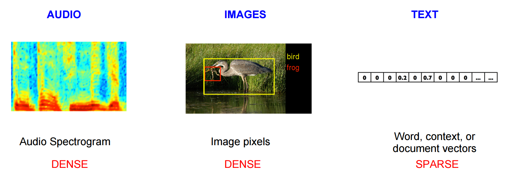
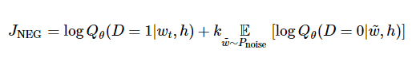
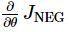

字词的向量表示
Table of Contents
word2vec模型是用于学习文字的向量表示，称之为 word embedding ：
- 为何需要使用向量表示文字
- 通过直观地例子观察模型背后的本质，以及它是如何训练
- TensorFlow对该模型的简单实现
- 给这个简单版本的模型表现更好
动机
通常图像或音频系统处理的是由图片中所有单个原始像素点强度值或者音频中功率谱密度的强度值，把它们编码成丰富、高纬度的向量数据集。对于物体或语音识别这一类的任务，所需的全部信息已经都存储在原始数据中。然后，自然语言处理系统通常将词汇作为离散的单一符号，例如 cat 一词或可表示为 Id537 ，而 dog 一词或可表示为 Id143。这些符号编码毫无规律，无法提供不同词汇之间可能存在的关联信息。换句话说，在处理关于 dogs 一词的信息时，模型将无法利用已知的关于 cats 的信息（例如，它们都是动物，有四条腿，可作为宠物等等）。可见，将词汇表达为上述的独立离散符号将进一步导致 数据稀疏 ，在训练统计模型时不得不寻求更多的数据。而词汇的向量表示将克服上述的难题

向量空间 模型将词汇表达（嵌套）于一个连续的向量空间中，语义近似的词汇被映射为相邻的数据点。向量空间模型在自然语言处理领域中有着漫长且丰富的历史，不过几乎所有利用这一模型的方法都依赖于分布式假设，其核心思想为 出现于上下文情景中的词汇都有相类似的语义 采用这一假设的研究方法大致分为以下两类：
- 基于计数的方法 : 潜在语义分析，计算某词汇与其邻近词汇在一个大型语料库中共同出现的频率及其他统计量，然后将这些统计量映射到一个小型且稠密的向量中
- 预测方法 ： 神经概率化语言模型，试图直接从某词汇的邻近词汇对其进行预测，在此过程中利用已经学习到的小型且稠密的嵌套向量
Word2vec是一种可以进行 高效率词嵌套学习的预测模型 。其两种变体分别为：
- CBOW模型：连续词袋模型，根据源词上下文词汇( the cat sits on the )来预测目标词汇（例如 mat ）
- Skip-Gram模型：它通过目标词汇来预测源词汇
他们的区别在于：
- CBOW算法对于很多分布式信息进行了平滑处理（例如将一整段上下文信息视为一个单一观察量）。很多情况下，对于小型的数据集，这一处理是有帮助的
- Skip-Gram模型将每个 上下文-目标词汇 的组合视为一个新观察量，这种做法在大型数据集中会更为有效
处理噪声对比训练
神经概率化语言模型通常使用 极大似然法 进行训练，其中通过 softmax function 来最大化当提供前一个单词 h ( history )，后一个单词的概率 W_t ( target ) ：

当 score(w_t,h) 计算了文字 w_t 和 上下文 h 的相容性（通常使用 向量积 ）。使用对数似然函数来训练训练集的最大值，比如通过：

这里提出了一个解决语言概率模型的合适的通用方法。然而这个方法实际执行起来开销非常大，因为需要去计算并正则化当前上下文环境 h 中所有其他 V 单词 w' 的概率得分，在每一步 训练迭代 中：

从另一个角度来说，当使用word2vec模型时，并不需要对概率模型中的所有特征进行学习。而CBOW模型和Skip-Gram模型为了避免这种情况发生，使用一个二分类器（ 逻辑回归 ）在同一个上下文环境里从 k 虚构的 (噪声) ~{W} 单词区分出真正的目标单词 W_t
下面详细阐述一下CBOW模型，对于Skip-Gram模型只要简单地做相反的操作即可：
从数学角度来说，目标是对每个样本最大化：

其中

代表的是数据集在当前上下文 h ，根据所学习的嵌套向量 θ ，目标单词 w 使用二分类逻辑回归计算得出的概率。在实践中，通过在噪声分布中绘制比对文字来获得近似的期望值（ 计算蒙特卡洛平均值 ）
当真实地目标单词被分配到较高的概率，同时噪声单词的概率很低时，目标函数也就达到最大值了
从技术层面来说，这种方法叫做负抽样 使用这个损失函数在数学层面上也有很好的解释：这个更新过程也近似于softmax函数的更新
这在计算上将会有很大的优势，因为当计算这个损失函数时，只是有我们挑选出来的 k 个 噪声单词，而没有使用整个语料库 V ，这使得训练变得非常快。实际上使用了与 noise-contrastive estimation 介绍的非常相似的方法，这在TensorFlow中已经封装了一个很便捷的函数 tf.nn.nce_loss()
Skip-gram 模型
下面来看一下这个数据集：
the quick brown fox jumped over the lazy dog
先对一些单词以及它们的上下文环境建立一个数据集。可以以任何合理的方式定义 上下文 而通常上这个方式是根据文字的句法语境的（使用语法原理的方式处理当前目标单词，比如说把目标单词左边的内容当做一个 /上下文/，或者以目标单词右边的内容，等等） 现在把目标单词的左右单词视作一个上下文， 使用大小为1的窗口，这样就得到这样一个由(上下文, 目标单词) 组成的数据集：
([the, brown], quick), ([quick, fox], brown), ([brown, jumped], fox), ...
前文提到Skip-Gram模型是把目标单词和上下文颠倒过来，所以在这个问题中，举个例子，就是用 quick 来预测 the 和 brown ，用 brown 预测 quick 和 fox 因此这个数据集就变成由(输入, 输出)组成的：
(quick, the), (quick, brown), (brown, quick), (brown, fox), ...
目标函数通常是对整个数据集建立的，但是本问题中要对每一个样本（或者是一个batch_size 很小的样本集，通常设置为16 <= batch_size <= 512）在同一时间执行特别的操作，称之为随机梯度下降）来看一下训练过程中每一步的执行：
假设用 t 表示上面这个例子中 quick 来预测 the 的训练的单个循环。用 num_noise 定义从噪声分布中挑选出来的噪声（相反的）单词的个数，通常使用一元分布 P(w) 为了简单起见，就定num_noise=1，用 sheep 选作噪声词。接下来就可以计算每一对观察值和噪声值的损失函数了，每一个执行步骤就可表示为：
整个计算过程的目标是通过更新嵌套参数 θ 来逼近目标函数（这个这个例子中就是使目标函数最大化）。为此我们要计算损失函数中嵌套参数 θ 的梯度，比如，

对于整个数据集，当梯度下降的过程中不断地更新参数，对应产生的效果就是 不断地移动每个单词的嵌套向量，直到可以把真实单词和噪声单词很好得区分开
可以把学习向量映射到2维中以便观察，其中用到的技术可以参考 t-SNE 降维技术。当用可视化的方式来观察这些向量，就可以很明显的获取单词之间语义信息的关系，这实际上是非常有用的。第一次发现这样的诱导向量空间中，展示了一些特定的语义关系，这是非常有趣的，比如文字中 male-female，gender 甚至还有 country-capital 的关系, 如下方的图所示：

这也解释了为什么这些向量在传统的NLP问题中可作为特性使用，比如用在对一个演讲章节打个标签，或者对一个专有名词的识别
建立图形
先来定义一个嵌套参数矩阵。用唯一的随机值来初始化这个大矩阵：
embeddings = tf.Variable(
tf.random_uniform([vocabulary_size, embedding_size], -1.0, 1.0))
对 噪声比对的损失 计算就使用一个 逻辑回归 模型。对此，需要对语料库中的每个单词定义一个权重值和偏差值。(也可称之为输出权重 与之对应的 输入嵌套值)。定义如下：
nce_weights = tf.Variable( tf.truncated_normal([vocabulary_size, embedding_size], stddev=1.0 / math.sqrt(embedding_size))) nce_biases = tf.Variable(tf.zeros([vocabulary_size]))
有了这些参数之后，就可以定义Skip-Gram模型了
简单起见，假设已经把语料库中的文字整型化了，这样每个整型代表一个单词 细节请查看 tensorflow/g3doc/tutorials/word2vec/word2vec_basic.py
Skip-Gram模型有两个输入：
- 一组用整型表示的上下文单词
- 目标单词
给这些输入建立占位符节点，之后就可以填入数据了：
# 建立输入占位符 train_inputs = tf.placeholder(tf.int32, shape=[batch_size]) train_labels = tf.placeholder(tf.int32, shape=[batch_size, 1])
然后需要对批数据中的单词建立嵌套向量，TensorFlow提供了方便的工具函数：
embed = tf.nn.embedding_lookup(embeddings, train_inputs)
有了每个单词的嵌套向量，接下来就是使用噪声-比对的训练方式来预测目标单词：
# 计算 NCE 损失函数, 每次使用负标签的样本. loss = tf.reduce_mean( tf.nn.nce_loss(nce_weights, nce_biases, embed, train_labels, num_sampled, vocabulary_size))
对损失函数建立了图形节点，然后需要计算相应梯度和更新参数的节点，比如说在这里使用随机梯度下降法，TensorFlow也已经封装好了该过程：
# 使用 SGD 控制器. optimizer = tf.train.GradientDescentOptimizer(learning_rate=1.0).minimize(loss)
训练模型
训练的过程很简单，只要在循环中使用 feed_dict 不断给占位符填充数据，同时调用 session.run 即可：
for inputs, labels in generate_batch(...): feed_dict = {training_inputs: inputs, training_labels: labels} _, cur_loss = session.run([optimizer, loss], feed_dict=feed_dict)
结果可视化
使用t-SNE来看一下嵌套学习完成的结果：
可以看到相似的单词被聚类在一起。对word2vec模型更复杂的实现需要用到TensorFlow一些更高级的特性，具体是实现可以参考 tensorflow/models/embedding/word2vec.py
嵌套学习的评估: 类比推理
词嵌套在NLP的预测问题中是非常有用且使用广泛地。如果要检测一个模型是否是可以成熟地区分词性或者区分专有名词的模型，最简单的办法就是直接检验它的预测词性、语义关系的能力，比如让它解决形如 king is to queen as father is to ? 这样的问题。这种方法叫做类比推理
如何执行这样的评估，可以看build_eval_graph()和 eval()这两个函数在下面源码中的使用 tensorflow/models/embedding/word2vec.py.
超参数的选择对该问题解决的准确性有巨大的影响。想要模型具有很好的表现，需要有一个巨大的训练数据集，同时仔细调整参数的选择并且使用例如二次抽样的一些技巧
优化实现
以上简单的例子展示了TensorFlow的灵活性。比如说，可以很轻松得用现成的tf.nn.sampled_softmax_loss()来代替tf.nn.nce_loss()构成目标函数。如果你对损失函数想做新的尝试，你可以用TensorFlow手动编写新的目标函数的表达式，然后用控制器执行计算。这种灵活性的价值体现在，探索一个机器学习模型时，可以很快地遍历这些尝试，从中选出最优。
一旦你有了一个满意的模型结构，或许它就可以使实现运行地更高效（在短时间内覆盖更多的数据）。比如说，在本教程中使用的简单代码，实际运行速度都不错，因为使用Python来读取和填装数据，而这些在TensorFlow后台只需执行非常少的工作。如果你发现你的模型在输入数据时存在严重的瓶颈，你可以根据自己的实际问题自行实现一个数据阅读器。对于Skip-Gram 模型，已经完成了如下这个例子 tensorflow/models/embedding/word2vec.py
如果I/O问题对你的模型已经不再是个问题，并且想进一步地优化性能，或许你可以自行编写TensorFlow操作单元，添加一个新的操作。相应的，也提供了Skip-Gram模型的例子 tensorflow/models/embedding/word2vec_optimized.py。请自行调节以上几个过程的标准，使模型在每个运行阶段有更好地性能